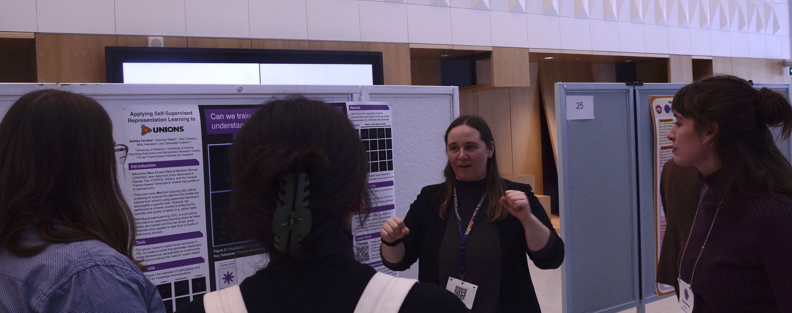

{% if site.talkmap_link == true %}
See a map of all the places I've given a talk!
{% endif %}
{% for post in site.talks reversed %}
{% include archive-single-talk.html %}
{% endfor %}
Note that while I was the presentor for all the talks listed above, I was often representing work done by a larger group and not just my own work.